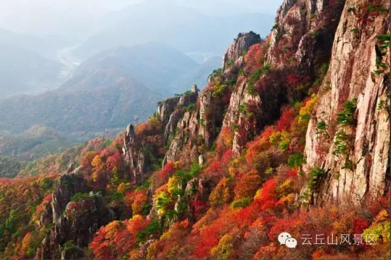
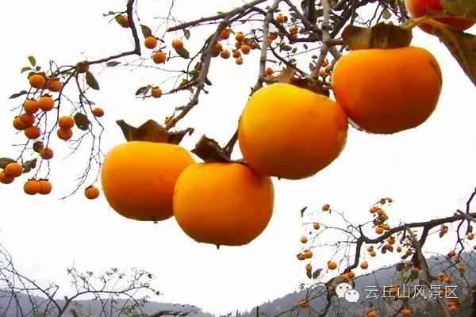

欢迎登陆云丘山景区官方网站！
 -->
-->


活动时间：2016年10月15日——11月15日
活动地点：山西临汾乡宁·云丘山旅游风景区
尊享热线：0357——6034567
云丘山位于山西省南部，最高海拔1629米，道教龙门派祖庭曾发源于此，其因特殊的地理位置与纬度形成了奇特的喀斯特地貌山林和诸多象形山体。云丘山拥有华北地区面积最大的红叶林，每当秋天来临，红叶漫山遍野，云丘山就变得七彩斑斓，形成了山西少有的因红叶与地质结合的云丘丹霞之景象。都说圣托里尼是用尽全世界的蓝，而云丘山的柿子林则是用尽了全世界的金黄。深秋在山间可以品尝野果的清香，又能够放松身心享受山野间大口呼吸的惬意，在塔尔坡古村里体验晋南婚俗、民俗，学习传统手工技艺。
在未知的路上我们选用相机记录生活，留下精彩瞬间，那么初秋来到云丘山则是用味觉和视觉感知这个秋天来临的最美好方式。
登山赏红叶，看漫山红遍，层林尽染
登山赏红叶，感受初秋带来的红叶美景。云丘山红叶是华北地区面积最大，最具观赏价值的红叶观赏区，每逢金秋时节，云丘山呈现出漫山红遍、五彩斑斓、层林尽染的绚丽景观。云丘山红叶品种、色彩之多，色泽之浓，是其他红叶观赏区所不能比拟的。除迷人的红叶以外，陡崖峭壁，怪石嶙峋，还有鸟鸣声声不绝于耳。登高望远游云丘山，会给你带来意想不到的惊喜。

品红柿、DIY柿饼、酿柿子醋
有人说圣托里尼的天是用尽全世界蓝的地方，而秋天的云丘山柿子沟却是用尽了全世界的金黄。还在为吃不到新鲜应季的水果而抱怨吗？快带着家人孩子来云丘山柿子沟吧，既可以品尝柿子的清香，又能够放松身心享受山野间大口呼吸的惬意。

柿子不容易储藏，于是就有了柿饼这种美味。将柿子去蒂剥皮，再经过干燥、上霜、窖藏，就能制作出柔软甜美的柿饼，润心肺、止咳化痰、清热解渴、健脾涩肠，是秋冬时节必不可少的美味之一。这里有地道的当地果农教你如何制作柿饼与酿制柿子酒，这里绝对让你大开眼界，满足你所有的想象，快来亲身体验吧！
五谷丰登大作战，精彩乐不停
活动期间，云丘山景区将开展精彩缤纷的互动活动。
①：“柿来运转”幸运抽奖。在景区小吃院设置“柿来运转”大转盘，凡购买门票的游客，凭门票只要编辑“云丘山柿柿如意红叶节美赞啦”发送到微信朋友圈，将截图发送到“山西云丘山”微信公众平台，即可免费参与抽奖，其中一等奖为【云丘山太太饼】（3个），二等奖为【云丘山特制柿饼】（3个），三等奖为【云丘山原生态小柿子】（3个）。
②：“问鼎吉尼斯”叠柿子大PK。设置叠柿子游客互动小游戏，游客互相比拼。由景区工作人员在旁边记录并公示游戏最高成绩。游客选择不断挑战，刷新纪录，参与者每人仅拥有一次机会，凡是总数刷新现有最高纪录的游客均可获得精美礼品一份（原生态小柿子2斤）。
③：“技高一筹”民俗手艺学习。云丘山至今依然保留着许多美食传统工艺古法制作，如蒸花馍、酿枣酒、捣辣椒、磨豆腐，所用食材均是产自云丘山，经过古法工艺制作，呈现出许多的美味。在这里不妨跟着手艺人学习下，把这些独有的晋南民俗文化继续发扬下去。（注：费用自理）
④：“七彩塔尔坡”田园艺术品技能比赛。以家庭为单位，联合民间高手制作“七彩塔尔坡”田园艺术品，看如何将普通常见的农作物变成“美轮美奂”的艺术品，可以在成型的艺术品旁边拍照合影，分享朋友圈、传递快乐。
⑤：“开心农场”五谷丰登创意贴画大赛。云丘山的布贴画是当地特色手艺之一，在金秋10月，我们开展别具一格的五谷贴画大赛。由景区提供大米、小米、绿豆、黄豆、红豆、黑豆、花生等五谷杂粮，游客利用这些食材粘贴出各具特色的贴画作品，完成作品后景区盖戳（云丘山纪念章）留作留念。（注：费用自理）
塔尔坡古村距今已有2500多年历史，这里不但古树参天、溪水潺潺、景色秀丽，更流传着许多传统的工艺与民俗。布贴画、数来宝、脸谱涂鸦、皮影戏、打花鼓、唱民歌等等叫人大开眼界，当然最为吸引人的还是云丘山婚俗表演，作为当地千百年来广为流传的特色习俗，生动、完整地展示了传统文化的内涵，观看演员表演的同时，游客也可以亲身体验参与，感受一回云丘山传统婚俗文化的独特魅力。来这里，不仅能感受大自然的鬼斧神工，更能体验人文风情的魅力所在，心情就像漫天的红叶一样张扬明媚，更像熟透的柿子一般饱满愉悦。
云丘山祈福，学业有成、事业有成、家庭和睦
云丘山是三教合一的名山，更是道教龙门派祖庭发源地。自古素有“南武当，北云丘”之美誉。每年的农历二月十五会有几万名的虔诚者前来祈福，云丘山的前山五龙宫、后山的八宝宫、玉莲洞、玉皇顶等构成了享誉晋南的云丘九境，祈福财源广进、早生贵子、平安吉祥、家庭和睦。

五龙宫 → 客运中心（乘车） → 塔尔坡停车场→ 神仙峪（柿子沟）→ 塔尔坡古村落（千年古村）→ 玉莲洞（道教）→ 一天门 （可选择原路返回或者继续登山赏红叶）→ 二天门 → 三天门 → 祖师顶（第二高峰）→ 乘坐2号索道（乘坐索道时，对面的红叶很美哦）→到康家坪停车场。
注：喜欢索道观景的游客，可以直接乘车去康家坪停车场 乘坐2号索道，观景，沿路线游览。
小贴士
云丘山赏红叶
最佳时间：2016.10.15——11.15
咨询电话：0357——6034567


Copyright 2015. YUNQIUSHAN.ALL Rights Reserved. ICP 备案号：晋ICP备12007937号 乡宁县云丘山旅游开发责任有限公司版权所有